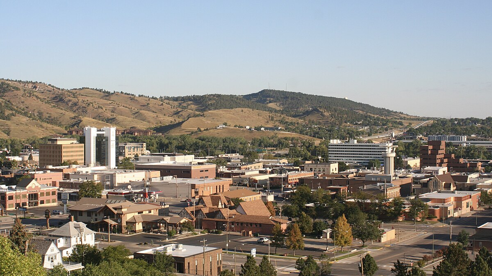
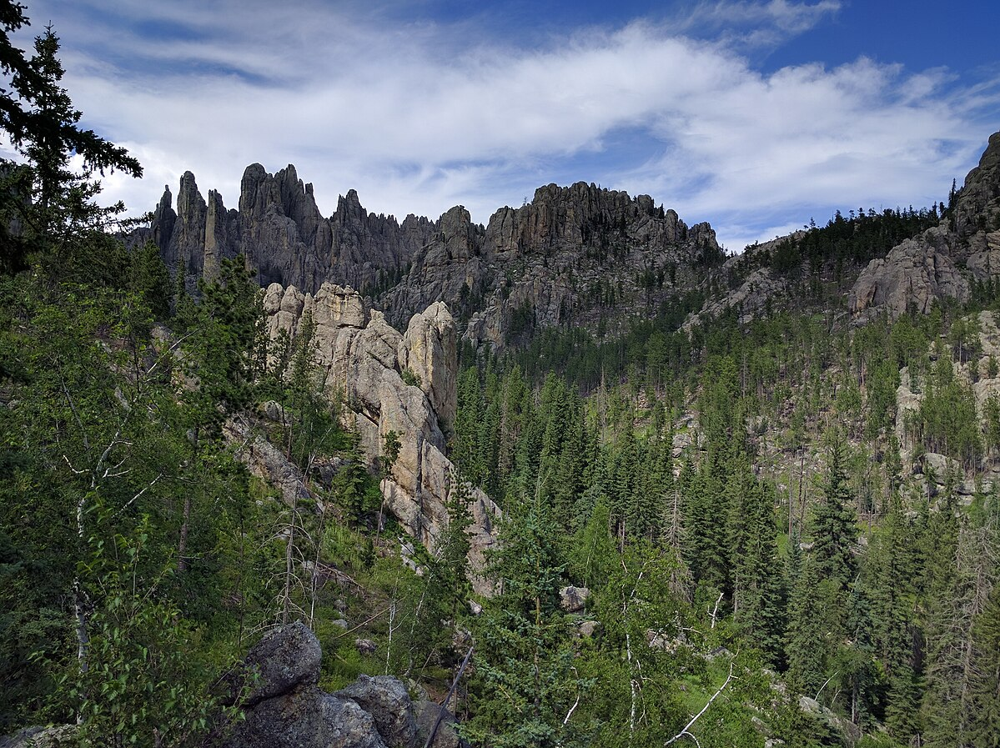

Rapid City
South Dakota
On my mission, I had a reassignment to the North Dakota Bismarck mission. The first place I was assigned to live was Rapid City, South Dakota. I quickly fell in love with the area, as I came to find out nearby there is a place called "The Black Hills." This is due to hills covered in dark evergreen trees, giving the illusion of endless black hills as you drive through them. Rapid City is also the closest big city to Mt. Rushmore! It was always fun visiting Mt. Rushmore on our P-days. There are also a lot of Native Americans there, and their history and culture are so fascinating to learn about.
 